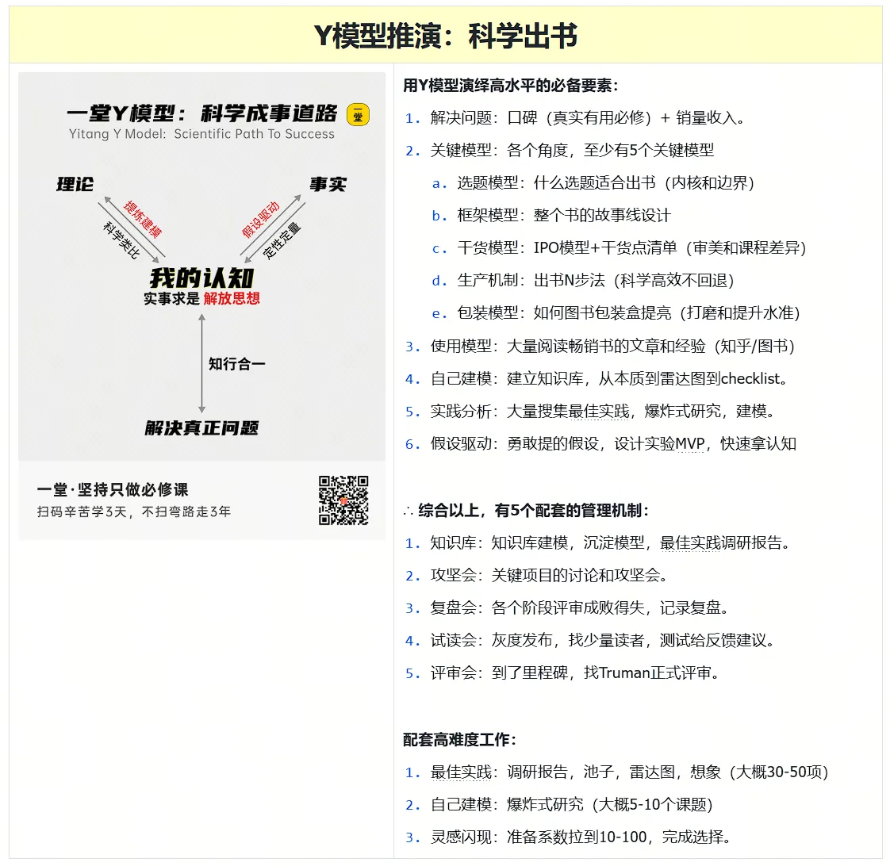

web3-learn 教程 · 五步法 · STEP 02
STEP 02 · 明确目标
把"成为顶尖"换成 4 个可验收数字
"成为顶尖高手"不是可验收的目标——它没有第三方判定标准，没有截止日，没有"通过/不通过"两态。所以我们把它拆成成功率：每一项都写成能被第三方判定通过与否的样子。
四个量化指标 · 互为依存的关系
每个数字都能被第三方判定，不靠感觉。但 4 个不是平行的——看下面的关系图，谁驱动谁。
← 来自 STEP 01 范围声明→ 驱动 70% / 8 项
1
个生产级项目
多链充值提现系统，能
docker compose 一键跑起✅ 第三方判定：截图录屏 + Github Actions 跑过
← 来自 1 个项目→ 证明深度
70%
核心逻辑覆盖率
资金路径必须覆盖，事件解析与对账全覆盖
✅ 第三方判定：go test -cover 输出数字
← 来自 1 个项目→ 写进简历
8
条交付验收项
见下方"交付标准"，缺一条不进求职阶段
✅ 第三方判定：progress.md checklist 全部 ✓
← 来自 8 项交付→ 反向修正
30+
远程岗位投递
以面试反馈为唯一修正信号来源
✅ 第三方判定：
tracker.csv 行数反脆弱判断表 · 指标不动时该怀疑什么
连续两周某个指标没涨，先看这张表——不是怀疑自己。
| 症状 | 先怀疑这个 | 具体动作 |
|---|---|---|
| 1 个项目 卡 4 周还没跑通最小路径 | 范围 范围声明没写 → 试图一次做太多 | 回到 STEP 01，缩到 1 个最窄的 happy path |
| 70% 覆盖 5 周还没到 | 测试框架 不是覆盖率问题，是测试写不动 | 暂停加覆盖率，先写 1 个 e2e 测试打通流程 |
| 8 项交付 一直凑不齐 | 交付定义 标准定得太高，每条都"差一点点" | 降到 5 条可验收项 + 3 条"展示项" |
| 30+ 投递 6 周还没过 10 份 | 简历 不是投递数量问题，是简历/作品集过弱 | 暂停投递 2 周，重新打磨 README + 录 demo 视频 |
| 任意指标 涨了但质量下降 | 虚荣指标 数字涨 ≠ 真实能力涨 | 对比 STEP 04 4 类信号投票，是否都 ≥ 3 |
| 全部 都涨但依然 0 面试 | 市场 不是能力问题，是市场没看到你 | 切换渠道：v2ex / twitter / GitHub trending |
使用方法：每周末复盘时，对照这张表逐项排查——不是"自己没努力"，是"哪个环节需要换思路"。
目标可验收性自检 · 5 个 yes 才能算"目标"不是"愿望"
对每个数字问 5 个问题。5 个 yes = 真目标；任何 no = 那是愿望。
📋 自检模板（点击折叠）
1
有数字吗？
不是"做得好"，是"70% / 30 份 / 8 项"
2
有截止吗？
不是"以后"，是"第 12 周"
3
有第三方判定吗？
不是"我觉得"，是"go test -cover"
4
有失败状态吗？
不是"达成/没达成"，是"达成/未达成 + 未达成的具体原因"
5
有反馈渠道吗？
不是"自己看自己"，是"面试官反馈 / 用户投诉"
🎯 30+ 投递 12 周分配器
填入每周投递节奏，自动算出 12 周累计 + 风险预警。
24
12 周累计投递
⚠️ 累计不足 30 份，建议每周提升到 ≥4 份或提前启动。
💡 公式：投递份数 × (12 - 启动周) = 累计。目标 30 份，平均每周 3-4 份 是正常节奏。
